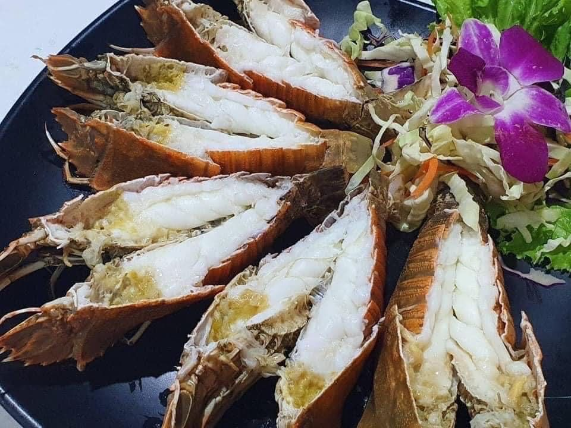
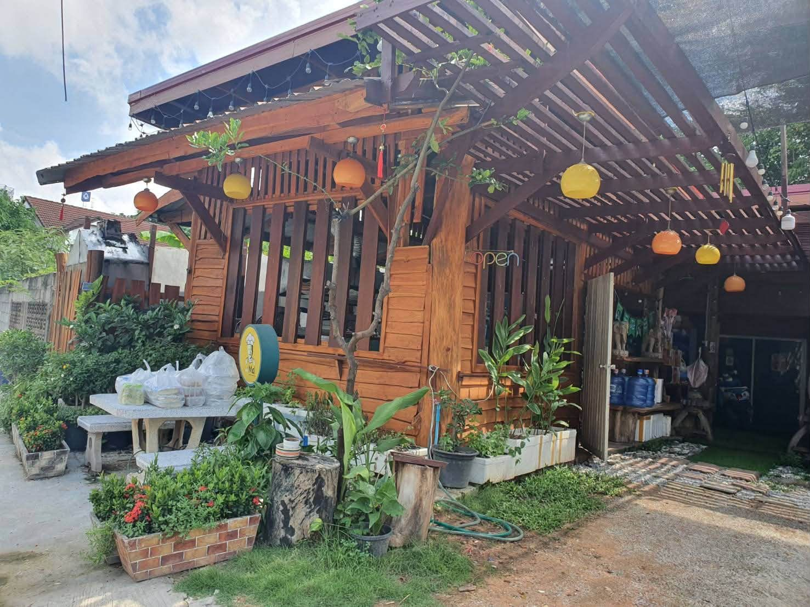
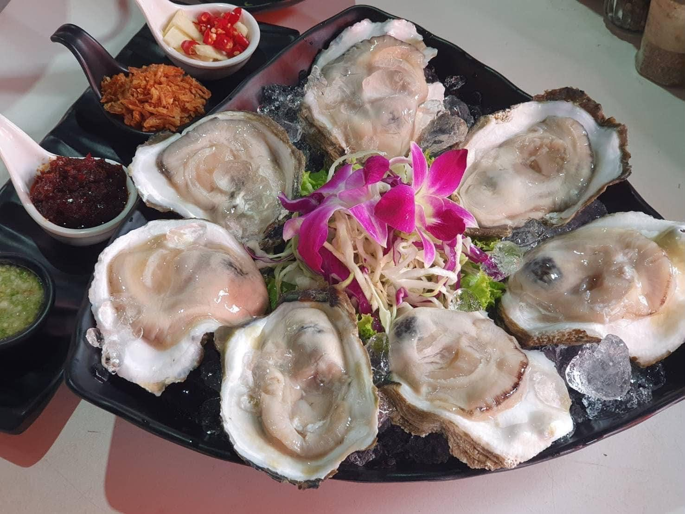
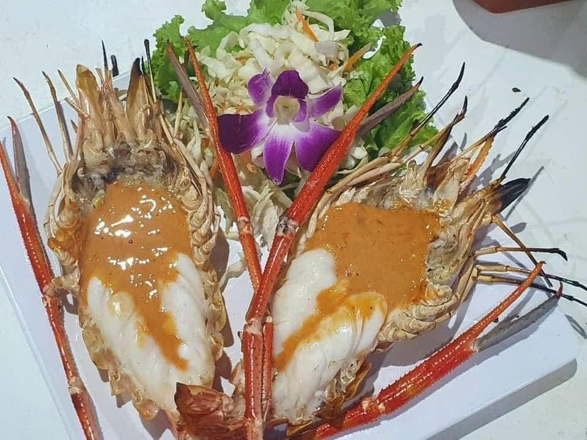
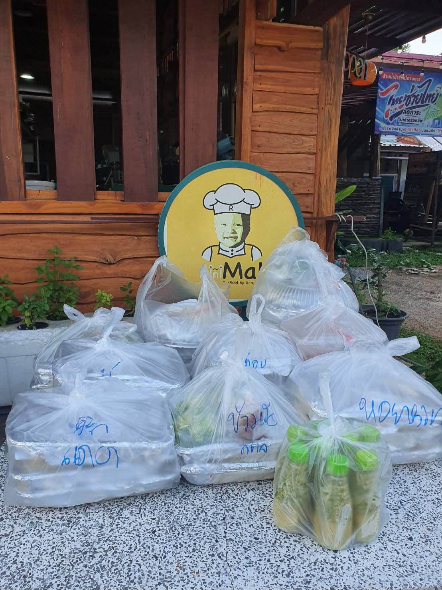
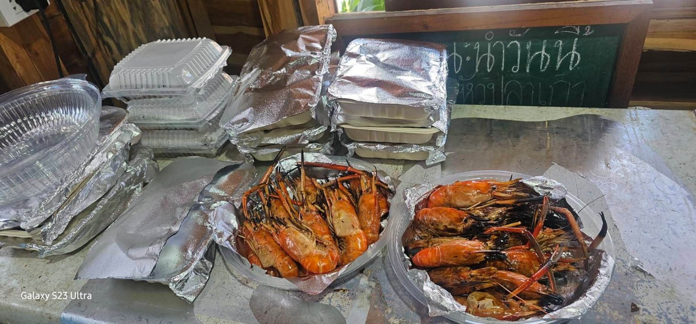

From the grill ทะเลปิ้งย่าง
Prawns, shellfish and more, grilled and served with our house sauces.

Seafood Restaurant · Khon Kaen
มินิมอลซีฟู้ด · ร้านอาหารทะเล ใจกลางเมืองขอนแก่น
Prawns, shellfish, crab and fish, served with our three house seafood sauces in a cool, air-conditioned teak-wood house on Phimphasut Road. Bring the whole family.
About us · เกี่ยวกับเรา
MiniMal Seafood by Ranjana is a family-friendly seafood restaurant in the middle of Khon Kaen. Find our wooden teak house halfway down the soi, right beside the railway, just off Phimphasut Road.
We keep it simple: quality seafood, cooked well and served with our three signature seafood dipping sauces. Come in for lunch or dinner, take it home, or have it delivered.
“กุ้ง หอย ปู ปลา พร้อมเสิร์ฟค่ะ
พาครอบครัวมาทานอาหารกันนะคะ”



The secret's in the sauce
Every table gets our signature seafood dipping sauces, made the MiniMal way: zesty, spicy and full of flavour. Don't skip them!
#น้ำจิ้มซีฟู้ดสุดแซ่บ · น้ำจิ้มซีฟู้ด 3 สูตรเด็ด
Catering & food sets · รับจัดเซตอาหาร
We prepare food sets for offices, events and families. For the past four years, we've been trusted to prepare food sets for the Faculty of Medicine, Khon Kaen University.
We also prepare offering sets for Chinese festivals and ancestor worship (ไหว้เจ้า · ไหว้บรรพบุรุษ). Call or message us to plan your order.


What guests say
“ร้านนี้คือที่สุด ขออนุญาตแนะนำ อาหารทะเล สด สะอาด ราคาน่ารักมากๆ”Facebook review
“อร่อยทุกอย่างค่ะ จะกลับมาทานอีกนะคะ”Facebook review
“อาหารทะเลอร่อยมาก”Facebook review
Visit · การเดินทาง